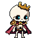

Dungeon Matcher / Art direction review / 11 October 2026
Keep the characters. Bring their rendering together.
Rattlebones is the primary golden standard. This review recommends selective simplification and clearer state acting across the complete bound cast. All scores and proposed additions await your review.
All four zones, three players, plus two disabled Grand Delver alternates.
361 states / 2,983 drawing entries
Actual Unity sprite bindings and serialized timing. Consecutive repeated keys retain their holds.
Zero production sprite edits
No PixelLab generations. Source-frame review, not fresh Unity or phone validation.
Proposed golden additions
Royal Swordsman — clean armor; Elven Mender — quiet cloth and support identity; Orc Trailguard — broad nonhuman material separation; Pearl Thief — playful marine simplicity.
Farmer and Pan Villager remain supporting anchors. Elven Scout is a specialist reserve. Reference roles do not imply copying anatomy, colors or stance.
First correction batch: Puffer inflated-face clarity; Snapvine death progression; Lantern Warden detail hierarchy; Seismic Smith beard/chest/hammer simplification. No whole-character regeneration recommended.
Native 1×, full imported canvasSelected frame at 3×Unchanged Rattlebones, same integer zoom

Play uses the source exposures and serialized state speed. One-shot states stop; loops repeat. Dynamic gameplay speed, transitions, overlays and shared feedback are not simulated. 1× means one CSS pixel per source pixel; use browser zoom 100%.
Exact source, state coverage and drawing contact sheet
Compare the cast
Unchanged imported fallback/ready frames at 2×. Full canvases, top-left aligned; bodies have not been normalized to equal height.
Whole-game hierarchy
Keep bright faceted gems and distinct zone identities. Quiet the orange log-cell interiors behind warm gems, water streaks behind Court controls, and detailed cave machinery behind actors. These are future art proposals, not gameplay/layout changes.
Historical committed 1080×1920 test captures, not new captures. White silhouettes are hit-flash moments. The modified local Court throne prefab is outside this evidence.